WHICH CHURCH DID CHRIST ESTABLISH?
What are the fruits that identify it?
-— - ~
A Sturdier "Staff of Life”
Better bread at little cost
Myth of the Black Curse
The black races are NOT the ones who were cursed!
The Saar—Europe’s Problem Child
A small area that provides a big problem
FEBRUARY 22, 1956 semimonthly
THE MISSION OF THIS JOURNAL
News aourtsei that are able to keep you awake,to th* vital issues of our times must be unfettered by censorship and selfish interests. ■‘Awake J” has no fetters. It reoognizes facts, faces facts, Is free to publish facts. It is not bound by political ambitions or obligations; it is unhampered by advertisers whose toes must not be trodden on; it is unprejudiced by traditional creeds. This Journal keeps itself free that It may speak freely to you. But it does not abuse its freedom. It maintains integrity to truth.
"Awake!” uses the regular news channels, but is net dependent on them. Its own correspondents are on all continents, in scores of nations. From the four corners of the earth their uncensored, on-the-scenes reports cojjie to you through these columns. This Journal’s viewpoint is not narrow, but is international. It is read in many nations, in many languages, by persons of all ages. Through its pages many fields of knowledge pass in review—government, commerce, religion, history, geography, science, social conditions, natural wonders—why, its coverage is as broad as the earth and as high as the heavens.
"Awake!'* pledges itself to righteous principles, to exposing hidden foes and subtle dangers, to championing freedom for all, to comforting mourners and strengthening those disheartened by the failures of a delinquent world, reflecting sure hope for the establishment of a righteous New World.
Get acquainted with "Awake!” Keep awake by reading “Awake!”
PcBi.i’iintn Semimonthly By WATCHTOWER BIBLE AND TRACT SOCIETY, INC.
117 Adtnos 8trett Brooklyn 1, N. Y„ t'. 8. A.
N. H. KhO*b. PrrrlSfnt Giant Bvtmi, itecrelary
Prlrtlng this issue 1,360,000
LiviufM Id whM tilt mifuliu h ffiMfohtd: —VrlUtna. EnfUnb, FMmKi, Fnorh.
'p»nish. Swtdjslf
AbnUly- -Dwhti., Grerif. FWixwnr On'riir Ottcwj YriHy rjfrvcrlyV n rrc
AiHTtea, V.S.. 1J7 Adir< St - Krejci 1, NY. J *
Alt&ftlla. 1 L Bwoferd Rd.. Ht-itAficK. S.S.W. 3 •
CiMfa, 40 Irrf* Ah., TertM* 5. J!
Dfltid. 34 Cnrat Timet,' I/adiwi. W. 7'
Ntw ZmIiM (IPO 30. <' t 7 ■
Stitll Africa, Pirate Im. “ri *'•
I fault in mi ’* m j rar fc1
irr <» 1 irr* with riitrniidxn in ft>ur<ri?
*V* iW’un TW*Hnr RrMittmt'Ca a he *
Broak^n h'** -wtH* nt crikr 1* tirni-M H Im rrh* I n- at ^rrry n-'y Sutw'r>»H
rates LUftT^n! -crrornrN j-5 in Ixs.
cisrrpkfy. Italtt *F ngirttUfl Kill: rer.**,al >Ur-< h ataii at twi ikMfpf Wiy* Mhtrriptlcc ^r«f (Mau Mdn» whan ta rr -4T* my > rtptirtH er»e*''> within out rtnlk. \(ra <ld 1* Tt l aa nr* ,
E<i]pr#f? ng an*:nd *!h< uittf v BtikJi-' » - A‘* <5* Maren 1 137? i - 1 s 4
CONTENTS
The Family Breakdown
Which Church Did Christ Establish’’
Who Measure Up?
A Sturdier "Staff of Lifr"
Cause and Effect
Special Delivery
Gilead’s Observatory Completed
Lebanon: Land of Beauty and Tolerance 16
Clergy Complaint
Myth of the Black Curse
Negroids from Cush—Not Canaan
The Saar—Europe’s Problem Child
Postwar Schizophrenia
Stomach Trouble?
‘Your Word Is Truth"
Catholic “Keys" to Outwit Automation 23 Jehovah's Witnesses Preach in All
the Earth—Sierra Leone
Do You Know"
Watching the World
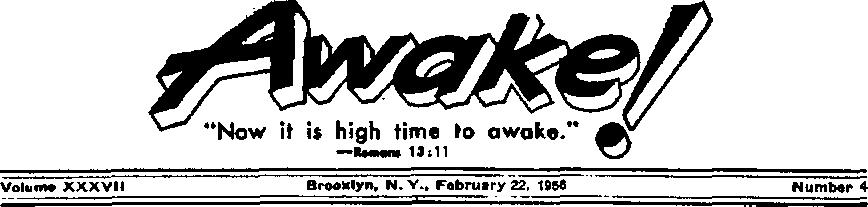
CHILDREN today are all too often left to bring themselves up. They cannot do it successfully. Despite the protestations of some modem child psychologists, the words of man’s Creator still hold true in this atomic age: "Foolishness is bound up in the heart of a child; but the rod of correction shall drive it far from him.” Who are to use the "rod of correction”? The parents. They have the responsibility of bringing up their children. But the world’s moral fiber has broken down.—Proverbs 22:15, Am. Stan. Ver.
Tn many countries the family breakdown has been going on unabated, especially in lands that pride themselves on being ultramodern, such as the United States. Why? Widespread jack of family worship is a glaring reason. Parents'take little or no interest in the spiritual welfare of their children. Thus it was that Judge Samuel S. Leibowitz of Brooklyn Kings County Court, one of the busiest criminal courts in the United States, said:
“Even within tine home, the basic, traditional values in family living are disappearing. People worship new automobiles and television sets and such, instead of God. and naturally the children follow suit. If we can re-create the older ideals, when children were taught to worship God and to respect others, we shall have gone a long way toward restoring the moral fiber of the whole community.’’—U.S. News d World Re-port, January 14, 1955.
Another powerful factor in the family breakdown is the revolt of modem women. This was pinpointed by Dr. Abram Kar-diner in his book Sea: and Morality. Citing the reasons Dr. Kardiner gives for juvenile delinquency, the New York Times review of his book said: “The feminist movement aimed at parity with the male socially, economically and sexually, but reached its goal only at the cost of human happiness and effectiveness. The child and society were the main losers. It was a Pyrrhic victory. . . . The family lost its cohesiveness and children grew up in a less protective environment. Mothers went to work and were replaced by paid substitutes. Nursery schools, schools and camps were misused to take over the responsibilities of deteriorating homes.”
Little wonder, then, that many modem homes bear a foggy resemblance to what a home should be. As Ralph W. Whelan, executive director of New York city’s Youth Board, put it: "In many respects the home has become a kind of hotel, where youngstei-s come to sleep and eat. The street is their living room.’’
Even more forceful terms were used in describing the family breakdown by educator-writer Alan Valentine in his book The Age of Conformity: “Many homes are little more than service stations, uniy economic convenience and the bonds of affection—and sometimes habit—hold some families together. . . . The typical family has become a collection of individuals thrown together by biological and economic circumstances and all too conscious of the fact—each going his or her own way, with separate occupations, separate amusements and separate friends. Most families do not get together; they only live together. They do not communicate ideas, but debate practical immediacies such as who will use the car this evening or what television channel can be agreed upon. Perhaps whatever of value modem parents have to give their children can be imparted in the movie theater or over the telephone or while father is dropping them at school on the way to his office."
As the tide of delinquency surges in relentlessly, it becomes overwhelmingly clear that there is no substitute for the moral and spiritual training of a child by his parents. One prominent judge, Chief Justice Elijah Adlow of the Municipal Court of Boston, spotlighted the family breakdown and its direct bearing on juvenile delinquency. In an article entitled “Teen-Age Criminals” Judge Adlow wrote in The Atlantic Monthly of July, 1955:
“The authority of parents has been weakened. And for the impairment of this most important element in character building the parents themselves are to blame. In many homes parents have viewed their responsibilities in a detached and indifferent manner, and their children could really be said to have been left to bring themselves up. . . . Children who are brought up in an atmosphere of drunkenness and brawling, and who daily see the laws of God and man violated in their homes would have to be more than human if the atmosphere in which they were brought up did not leave its stamp upon them. Such homes are nothing less than breeding places for crime, and the records of our courts go to prove it... It Can be said with truth that some of these children never had a chance."
Judge Adlow then says: “Human behavior is linked with character, and the process of character building commences at infancy and acquires its basic strength and quality in the home. No public agency can supply the training and instruction which a well-managed and properly supervised household affords. No one can replace parents in the training of children.”
“Since the beginning of World War II,” Judge Adlow continues, “the abandonment of domestic responsibilities by many mothers in industry has left countless children in America to rear themselves. It was inevitable that some of these children would speedily show evidences of neglect. The direct result of this absenteeism from the home was noticeable during the war. . . . The judges expected that with the return to normalcy, and the return of mothers to their homes, the conditions would abate. Unfortunately, a good many mothers who left home for a jab are still working, and their families are expected to bring themselves up the best way they can..., While woman legally has a right to participate in industry, there is no moral sanction for abandoning a much more sacred responsibility. And the great decision which the modem woman must make is whether she prefers the career of motherhood to that of a worker. She cannot undertake both and succeed.”
Parents, both mother and father, cannot neglect the training and correcting of their children. When they do the family breaks down. With no correction, no one to direct their steps, delinquency results. That is why God’s Word commands parents: “Train up a child in the way he should go, and even when he is old he will not depart from it.”—Proverbs 22:6, Am. Stan. Ver.
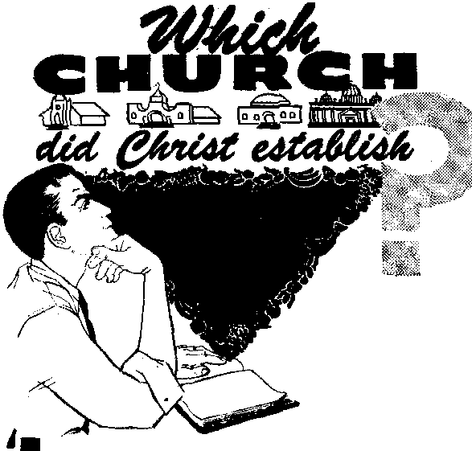
H ESUS Christ established the Roman Igp Catholic Church and only it in the year 33 (A.D.) at Jerusalem? Thus claims Cardinal Gibbons in his authoritative Roman Catholic work, The Faith of Our Fathers, page 46.
fifty years ago one J. T. Lloyd, writing in did not his church until
- ■ about two years later, when at Pentecost
There was a time many Protestants felt the same way about their particular church, that it alone was the one established by Jesus Christ. In fact, only some the Religious Herald, stated: “Baptist churches are the only Christian churches in existence.” Today, however, as noted by the ecumenical movement and the National Council of the Churches of Christ, most Protestants believe that the various sects of Christendom are but so many branches of the one true vine, so many different j'oads but all leading to heaven.
What is the truth? Are the many different churches of Christendom all legitimate offspring of the one church that Jesus Christ established, or is there but one denomination that can lay claim to being the true church? Unless we have the right answer to this question we shall certainly be misled and held in bond, age by error.
J How can we determine ? the truth? By the Scriptures and the facts. The church that Jesus Christ established will be found teaching what he taught, will have an organization in harmony with his instructions and will be bringing forth the right kind of fruits. Of course, to arrive at the truth we must be objective, not approaching the subject with preconceived opinions, but solely with the purpose of ascertaining just what kind of church Jesus Christ did establish. Only then can we properly determine who does measure up.
One Church and Its Purpose
Since Jesus Christ is the one that established his church it follows that he, rather than anyone else, must be its head, and so we read: “He is the head of the body, the congregation,” or church. And while it appears that Christ chose his twelve apostles during the second year of his ministry, he the 120 of his followers, gathered in an upper room in Jerusalem, received the holy spirit and thereby became anointed ones, Christians.—Colossians 1:18; Acts 2:1-41, Hew World Trans.
Can the some 250 professedly Christian denominations be just so many different branches of the church Christ established? How can they when they teach contradictory things? That would mean disorder and confusion in Christ’s church, and Paul tells us that “God is a God, not of disorder, but of peace.” In fact, he lashed out against the spirit of sectarianism, which was already at work in his day, asking: “Does the Christ exist divided?” Yes, Paul plainly showed that there is but ‘one faith, one Lord, one spirit, one baptism, one God and Father.’ Why, he went so far as to say that even if an angel from heaven taught another good news from that which he had brought “let him be accursed.”—1 Corinthians 14:33; 1:10-13; Ephesians 4:2-6; Galatians 1:8, 9, N&w World Trans.
And why did Jesus Christ establish a church or congregation? His chief purpose was that the great witnessing work that he had begun would not end with his death. It was for this reason that he had primarily come to earth, even as he told Pilate: "For this purpose I have been born and for this purpose I have come into the world, that I should bear witness to the truth.” That was why he trained the twelve apostles, and later the seventy evangelists, and sent them forth to preach, “The kingdom of the heavens has drawn near.”—John 18:37; Matthew 10:7; Luke 10:1, New World Trans.
And that the apostles all understood- it that way is apparent from their writings. Said Paul: “With the heart one exercises faith for righteousness, but with the mouth one makes public declaration for salvation.” And Peter, to his fellow Christians: “You are ‘a chosen race, a royal priesthood, a holy nation, a people for special possession, that you should declare abroad the excellencies’ of the one that called you out of darkness into his wonderful light.” —Romans 10:10; 1 Peter 2:9, New World Trans.
Not that only preaching is required. A work of sanctification must also take place, else ‘after having preached to others they themselves will lose out.’ That means they must “strip off the old personality with its practices, and clothe [themselves] with the new personality,” with the help of God’s holy spirit, study of his Word and prayer. They must deaden the “works of the flesh” and produce “the fruitage of the spirit,” proving themselves “faithful even with the danger of death.”—1 Corinthians 9:27; Colossians 3:9, 10; Galatians 5:1924; Revelation 2:10, New World Trans.
This twofold work of preaching and sanctification is qualifying the members of Christ’s church for their future heavenly activity, when they will “judge the world” and serve as “priests of God” and “rule as kings with” Christ for a thousand years, they as the spiritual seed of Abraham blessing all mankind. In view of this role it should not be surprising that Christ’s church is a very restricted body, only a “little flock,” of 144,000 according to Revelation 7:4 and 14:1, 3. We might illustrate the role played by Christ’s church by likening It to the members of Parliament. Not all Englishmen go to Parliament, but the purpose of those who do go is to benefit all the rest. So also Christ’s church goes to heaven for the purpose of blessing the rest of mankind. All of which, may it be noted, will serve to vindicate Jehovah’s name, in that it will prove that he is supreme and that his purposes will be realized in spite of what the Devil can do to thwart him,—1 Corinthians 6:2; Revelation 20:6, New World Trans.
The Scriptural Standards
While the congregation Christ established has many identifying characteristics, there are five that are particularly telling. The first of these is that it accepts the Bible as God’s inspired Word, even as Jesus did. He accepted as historical the accounts of creation, the Flood, Jonah, etc., and so does the church he established. —Matthew 19:4-6; 24:37-39; 12:40.
Secondly, the organizational structure must be according to Christ’s teachings and the example set by the early Christian congregation. There were to be no “fathers” or “leaders,” for their Father is God and their Leader Christ Nor are they ruled in a democratic manner, but from the Head down, ‘God setting the members in the body 5s it pleases him.’—Matthew 23:8-10; 1 Corinthians 12:18.
Another identifying feature of the church Christ established is that it must preach Jehovah’s name and Kingdom even as Jesus did. He went from city to city “preaching and declaring the good news of the kingdom of God”; and on the night of his betrayal he reported to his Father, “I have glorified you on the earth, having finished the work you have given me to do.”—Luke 8:1; John 17:4, New World Trans.
Keeping separate from the world and suffering persecution because of refusing to compromise is another telling characteristic of Christ’s congregation. Jesus told his apostles that they would be hated because “you are no part of the world,” and Paul stated that all who sincerely lived as Christians would be persecuted.—John 15:19; 2 Timothy 3:12, New World Trans.
And the fifth of these telling characteristics identifying Christ’s congregation is this: “Just as I have loved you, that you also love one another. By this all will know that you are my disciples, if you have love among yourselves.”—John 13:34, 35, New World Trans.
Who Measure Up?
Is there a body of Christians that measures up to these requirements as regards teaching, organizational structure and fruitage? Yes, there is. And where is it found? Among the New World society of the Christian witnesses of Jehovah.
This New World society accepts the Bible in its entirety as the inspired Word of God, does not apologize for it, does not try to explain away parts of it, nor does it twist the Bible to suit any creed. It alone keeps on adjusting its message to the ever-increasing light God sheds upon his Word “like the light of dawn, which shines brighter and brighter until full day.” It arranges for Bible study in the homes and at congregations and publishes a steady stream of Bible aids.—Proverbs 4:18, Beb. Stan. Ver.
The structure of the congregations associated with the New World society, as well as their rules of conduct, is all patterned according to the Scriptures. Only God and Christ are recognized as the “superior authorities” to whom all must be subject, as commanded at Romans 13 :1-4 (New World Trans.). None hold titled offices but all are addressed as “Brother,” regardless of whether they be “overseers” or “assistants.” Neither is there any clergy-laity distinction. Only in the New World society is every last member an ordained and active minister of the good news.—Philip-pians 1:1, New World Trans.
Further, closely following in the footsteps of Christ Jesus, the New World society bears testimony to the name and supremacy of Jehovah God; it bestows no honor upon men. And far from looking to man-made schemes such as the United Nations organization, as do practically all the sects of Christendom, the New World society stresses God’s kingdom as the only hope, fulfilling Jesus’ prophetic command that “this good news of the kingdom will be preached in all the inhabited earth for the purpose of a witness to all the nations.” —Matthew 24:14, New World Trans.
Not content with preaching merely from the public platform, the New World society follows the apostolic example of preaching from house to house and in the market places, and makes return visits
upon interested persons and conducts Bible studies with them. This is being done in more than a hundred different languages, in more than 160 different lands and isles of the sea, and by means of the printed page, radio, television and every other lawful and effective channel of communication. In all this the New World society likewise is unique.
Also the New World society is unique in its keeping separate from the world, mixing in neither its politics nor its commerce. Keeping separate from other religions, it refuses to make common cause with the corrupt governments of this world by use of bedlots or bullets. As a result, of this group and of this group alone it can be said, as it was of the early Christian church, "everywhere it is spoken against.” —Acts 28:22, New World Trans.
And finally, only the New World society qualifies when it comes to showing the same kind of love for one another that Jesus showed for his followers. They do not let the color of the skin segregate them, nor do they let national origins serve as an excuse for killing one another in time of war, the way Catholic kills Catholic, Lutheran kills Lutheran, Methodist kills Methodist, etc. Yes, only in the New World society does everyone refuse to let the old-world issues make division between brothers. When these meet at their assemblies they manifest such love that the world must take note of it, even as Jesus said would be the case.
"Little Flock” and "Other Sheep”
Does that mean that everyone associated with the New World society belongs to the church Christ established? Not at ah, for today it numbers upward of 640,000, whereas the church is limited to 144,000. And when we consider that the selection of this number began at Pentecost, we can see that at best only a remnant of that number could still be remaining at the present time. That is why less than five percent of those associated with the New World society profess to be of this anointed remnant.
Then what about the others, the 95 percent? The Bible shows that Jesus Christ has not only a "little flock” but now also “other sheep, which are not of this fold,” and which he also will gather. John had a vision of these, “a great crowd, which no man was able to number, out of, all nations,” and whom he heard ascribing salvation to God and Christ. These will gain salvation right here on earth, for God made this globe not in vain but to be inhabited. —John 10:16; Revelation 7:9, 10, New World Trans.; Isaiah 45:18.
Yes, the Bible tells of "hew heavens and a new earth” in which righteousness is to dwell. The church Christ established, together with its head, Jesus Christ, will constitute the new heavens, and the other sheep now being gathered are to be part of the new earth. After God clears out this wicked old system of things, which the Bible shows he will do at Armageddon, the battle of the great day of God Almighty, .then he will begin calling forth from the graves “all those in the memorial tombs,” beginning with the faithful men of old. Under the rulership of Christ and his church or bride eventually the knowledge of Jehovah will fill the earthful of people as the waters cover the sea, and eventually God “will wipe out every tear from their eyes, and death will be no more, neither will mourning nor outcry nor pain be any more. ” Then God's purpose regarding the church Christ established will be fully realized, all to the glory of God and the final and ultimate vindication of his universal sovereignty.—2 Peter 3:13; John 5:28, 29, New World Trans.; Isaiah 11:9, Am. Stan. Ver.; Revelation 21:4, New World Trans.
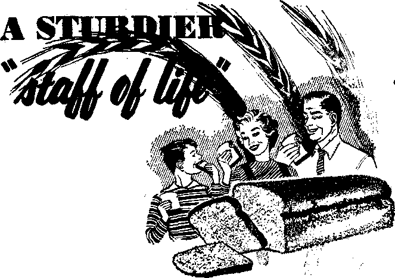
READ is often referred to as a “staff of life.” A staff is a good symbol J for bread, for it does give support to man. Thus the psalmist praised Jehovah for furnishing man with wine, oil and “bread to strengthen man’s heart”—Psalm 104:15,
While bread is mentioned as a synonym for food when Adam was sentenced to die, "in the sweat of your face you will eat bread," it seems that the next reference is to bread as such, at the time Mel-chizedek “brought out bread and wine” to Abram. And the very next mention of bread tells us how it was made. After saying to three unexpected guests: “Let me get a piece of bread, and refresh your hearts," Abraham urged Sarah: “Hurry! Get three seah measures of fine flour, knead the dough and make round cakes.” Incidentally, this meant baking quite a bit of bread, as three seah measures equal about a bushel, and it also shows that even in Abraham’s day there were different grades of flour, for he wanted “fine flour” used for his guests.—Genesis 3:19; 14:18; 18:5, 6, New World Trans.
Some four centuries later, when the Israelites left Egypt at midnight after the tenth plague, they left in such haste that they had to take their flour dough before it could be fermented or be baked into bread, and so they baked it afterward as unfermented bread, \ matstsah’. The account also tells us that they carried with them “their kneading troughs wrapped up in their garments upon their shoulder.” We are not to think of these as being literal troughs as we have today. It appears that these were small round wooden bowls that wert used ii> kneading bread. Incidentally, th/ bread Ahe Israelites and their forefathers ate was usually made from wheat flour, although the poor, and also others in time of famine, ate bread made of barley flour.—Exodus 12:34, New World Trans. Delving back into secular history we find that the ancient Egyptians were the first who had commercial bakers, and Herodotus tells us that while kneading their clay with their hands they kneaded their bread with their feet. These bakers had a special white bread for the rich. In later times the Greeks were considered the world’s best bakers. And as for the ancient Romans, one of their writers, Juvenal, contemptuously refers to his people as having but two wants, “bread and circuses,” or entertainment. In ancient Rome there were special types of bread, for senators, knights, peasants, etc. For grinding the grain, which was done with pestle and mortar, slaves were used until the time of Constantine, he abolishing slavery. After that criminals were recruited to do the grinding.
For many, many centuries legislators have concerned themselves with bread, as to weight, contents and price. All during the Middle Ages the baking of bread was thus regulated and violators were severely punished. In Turkey the lot of the baker was especially hard, for in times of famine it was the custom to hang a baker or two! And there as well as in Egypt a baker who had given short weight or adulterated his product was punished by having his ears nailed to the door offfiis shop! Obviously bakers in olden times, at least in certain lands, did not have things all their own way!
Baking Bread in Modern Times
According to The Encyclopedia Americana, some fifty years ago all but five percent of the bread baked in the United States was baked at home, whereas today this ratio is practically reversed. Latest government statistics show that the baking industry employs upward of 280,000 persons and does a business running into billions of dollars annually. Today, in such cities as New York, there are baking ovens that bake 6,000 loaves an hour and only twenty men are required for the entire process from flour to bread.
In years gone by the wheat was ground either at home or at a neighborhood mill. Then all the grain was used and bread contained all the valuable elements that the Creator had placed in this “vegetation bearing seed” for man’s benefit. However, as the milling of flour became big business it was found that the more it was refined the easier it was to store, and so the baking industry stressed the desirability of bread’s looking nice, soft and white. As a result flour was robbed of practically every valu-* able element except starch.
Bread has been impoverished not only by the millers but also by the bakers, who have not scrupled from adding even harmful chemicals until restrained from doing so by the government. One case was that of Agene, nitrogen trichloride, which was used for twenty-five years until it was found that dogs eating bread made with it had convulsions. It was banned in the United States as of August 1,1949. A more recent instance was polyosethylene mono-sterates, which the government banned May 13, 1953, after winning the various cases in court that the manufacturers had brought against it in their efforts to continue making the stuff and selling it to the baking industry. One third of the bakery industry in the United States was using it, more than 10,500,000 pounds annually, and according to the government’s commissioner, Charles W. Crawford, it would make “good paint remover.”
Testimony given to the United States House Committee showed that in 1949 two companies alone sold 30,000 bakers ten million pounds of chemicals, the purpose of which was to serve as substitutes for milk, butter, eggs and shortening. One manufacturer advertised that a pound of his chemical and five pounds of water would take the place of six pounds of shortening and that with its use milk solids could almost entirely be dispensed with. But what about the nutritive content?
True, there has been some “enriching” of bread by means of artificial vitamins and other elements, a process which, however, has fittingly been likened to a thief's stealing all the family’s silverware and then returning one spoon. In Switzerland no chemicals may be added to bread, and, as for this artificial enriching business, one nutritionist there observed, “the Swiss do not indulge in that foolishness.”
A Sturdier Staff of Life
Nutritionists have generally recognized that baking bread is not merely a matter of softness, whiteness and profits. Among
the foremost of these is Dr. Clive M. McCay, who has developed a simple bread formula even more nourishing than whole wheat. Dr. McCay is professor of nutrition at New York State College of Agriculture at Cornell University, is a specialist in physiological chemistry, was for three years in charge of food and nutrition research for the United States Navy and in 1951 served as president of the American Institute of Nutrition.
For twenty-five years Dr. McCay has been doing research in nutrition and as a result of his recommendations—and because manufacturers of dog food are more concerned with the health of dogs than.the baking industry is interested in the health of humans—dogs in the United States are being better fed than humans! Among the things he has demonstrated with rats is that, provided they Were given the right kind of diet, those kept thin lived much longer than those who could eat all they wanted, and, even among these, it was found that those who were forced to exercise were the healthiest. Of interest also is the fact, that, as with humans, the female rats lived longer than the males.
On the basis of his experiments he developed a formula that he termed “Triple Rich,” and to which, in addition to the usual bread ingredients, are added wheat germ, powdered skim milk and soy flour. Rats thrived on this bread, whereas they gained very little on the bread popularly sold. The baker originally making his bread uses the following items in the proportions given:
100 pounds unbleached flour containing two percent wheat germ
2 pounds yeast
2 pounds salt
Concerning his formula Dr. McCay-states: “Today, such valuable products as wheat germ, com germ, and yeast are largely dissipated into anima! feeds. Bread affords a superb medium for the distribution of these special protein concentrates. In Ithaca, because of the activity of nutritionists, such products as dry brewers’ yeast, wheat germ, and nonfat dry milk solids are sold in the grocery store like sugar; but in most communities the housewife cannot purchase such products.
“These valuable foodstuffs are readily available to the baker. Furthermore, he can buy them at wholesale prices and pass this saving on to the housewife. The difference in cost between a very poor bread and one of very high nutritive value ranges between one-half and one cent per pound loaf. Even those families with the lowest incomes are justified in such an additional expenditure because there are no cheaper proteins than these concentrates from primary foods. Man may not wish to live by bread alone, but he can almost do so if the bread is made in accord with modern nutritional knowledge.”—Journal of Home Economics, April, 1949.
The leading giants of the baking industry have not taken very kindly to this new type of bread, as it would involve some changes in their methods of manufacture. At a government hearing they insisted that this bread, although it looks white, should not be sold as white bread and they won their point, for the government ordered that such bread could not be marketed simply as white bread.
However, regardless of its label, there is an increasing demand for this bread. At Ithaca’s Co-op store, where it was first introduced, it keeps outselling all other brands combined, even though it costs more than the standard brands. No doubt this is partly due to the fact that it has real flavor as well as real nourishment. More
than a hundred oommerpial bakers are already producing it and the formula can be obtained by housewives who want to bake their own bread or use it in baking doughnuts, etc. In a slightly modified form it is being used in the mental institutions of New York state and in many public schools, such as those in New York city, Buffalo and Baltimore. Already a million people are availing themselves of this sturdier staff of life.
“Not on Bread Alone”
The foregoing: makes a very good point: as long as we are eating bread it might as well be as nourishing as possible, However, it is well to observe that even for physicalhealth more is required than the physical elements of proteins, vitamins, minerals, etc. There is the ever-present psychosomatic factor, the influence of the emotions upon one’s health, which King Solomon took note of some three thousand years ago, when he counseled: “Eat thy bread with joy, and drink thy wine with a merry heart/’ and reminded us that'“he that is of a merry heart hath a continual feast.*’ —Ecclesiastes 9:7; Proverbs 15:15.
And most important of all, of course, is the spiritual bread. As Jesus Christ told the tempter Satan: "Man must live, not on bread alone, but on every utterance coming forth through Jehovah’s mouth.” Today there is a spiritual famine in the land for the hearing of the words of Jehovah. Religious leaders have robbed the spiritual bread of life of all its nourishment and adulterated it by their creeds, traditions and higher criticism. Yes, good bread may keep us going ‘threescore years and ten’ with a minimum of aches and pains, but “this means everlasting life, their taking in knowledge, [spiritual bread | of you, the only true God, and of the one whom you sent forth, Jesus Christ.” To supply spiritual food for all who hunger and thirst for righteousness is one of the purposes of the Watch Tower publications.—Matthew 4:4; John 17:3, New World Trans.
The New York Times of July 3, 1555, contained a report by a commission of the National Education Association, based on a year-long study of the problems faced by 3,400 typical classroom teachers. They found that the No. 1 problem facing schoolteachers was that of maintaining discipline. Said the secretary to the commission: "Frankly, we were greatly surprised and somewhat shocked at the results of our survey. We didn't expect to And that classroom discipline would be the number one problem confronting our teachers today.” As to what may be the reason for this difficulty in maintaining classroom discipline, the words of Dr. Bruch of Columbia University may give some light. In an address to members of the American Ortho psychiatric Association he scored modem psychologists for their "permissive program/’ which "advocates lavishing love and affection upon the child,” while at the same time exercising “as little discipline as possible.”
In Chicago a pack of teen-age hoodlums recently forced their way onto a bus, but the driver called no policeman. Seeing no need to make the police go out of their way, he just drove his bus to the nearest police station and made a special delivery, turning the boys over to the law without any fuss or bother.
awake/
THROUGHOUT the centuries men of faith have gazed upon the material creation about them and have never failed to marvel at the abundant testimony it gives to the supremacy of its Maker Jehovah God. The Christian apostle Paul referred to such evidences as are found in creation as proof that men should not worship images, which are themselves the makings of lowly man. He said: “For his invisible qualities are clearly seen from the world’s creation onward, because they are understood by the things made, even his eternal power and Godship." (Romans 1:20, New World Trans.) With the same manner of reasoning the psalmist David considered the brilliant stars of heaven shining over Palestine and reverently sang praises to their Creator: "The heavens declare the glory of God; and the firmament showeth his handiwork.”—Psalm 19:1, Am. Stan. Ver.
But today men may examine the handiwork of God much more extensively. With the aid of modem microscopes, telescopes and limitless scientific investigation, knowledge of the creation has increased many fold. And with all this added knowledge of the things about them, men of faith today can do no more with added;
the concl ready reached1 ful men of olS
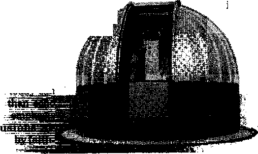
And so it was with proper interest in the visible creation that the Watch Tower Society was pleased to accept as a gift from two of Jehovah’s witnesses (who are themselves manufacturers of astronomical equipment) a large sixteen-inch reflector type telescope. The telescope was received and installed at the Watchtower Bible School of Gilead at South Lansing, New York, about a year ago, as was announced in the annual report on Gilead appearing in the Yearbook of Jehovah’s Witnesses for 1955. But only recently has the installation been made permanent and complete by the erection of a newly designed modem observatory dome for the housing of the valuable telescope and other instruments used in the study of the heavenly bodies.
The sixteen-inch glass reflector of Gilead’s telescope is equivalent in size to 12,000 average pupils of the human eye and is capable of detecting a light a thousandth as great as that which can be observed by the unaided human eye. With
such power the telescope will bring into view heavenly lights at a distance of 2,250,000 lightyears. (A light-year is approximately 6,000,000,000,000 miles.) As a matter of comparison, Gilead’s telescope is equal to or surpasses the average telescopes owned by colleges and universities through-r .tent the United States.
*" The telescope lens is mounted at the base of a seventy-four-inch metal barre) and reflects the light it receives from the heavens to a small mirror that Is also mounted within the barrel but near its upper end. Special magnifying lenses are then focused on the reflection in the smaller mirror and the observer up on a ladder then examines the stellar light through the eyepiece attached to the upper end of the barrel of the telescope. Once the telescope has been focused on a particular object for observation, an electrically powered motor at the base of the telescope keeps the object in focus by slowly turning the telescope just fast enough to offset the rotation of the earth. Thus the telescope automatically trails the object being observed.
The Gilead observatory dome is itself an innovation of its constructors, Astro-Dome, Inc., of Canton, Ohio. It follows a completely revolutionary design as far as observatories of its size are concerned. The dome was designed so that the entire structure would rotate on wheels set in a metal track that forms the foundation. Although the entire structure is of welded steel and sheet metal and weighs approximately three quarters of a ton, it is so balanced on the foundation wheels and track that it is easily moved by hand by whoever is operating the telescope. The dome is large enough to allow admittance to at least twenty persons at one time, it being thirteen feet six inches in diameter and having an equal height.
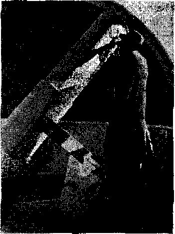
Interior of Gilead observatory
It is provided with an up-and-over type shutter system four feet wide, which allows the telescope to be aimed at any determined point above the horizon and in all directions. With the shutter system closed the telescope is- afforded complete cover protection when not in use.
As pointed out in the Yearbook report, astronomy is not a subject being taught as a part of the Gilead course of training; however, the newly installed telescope is proving its worth to the students as well as to others at Gilead. It impresses upon the minds of all the vital truth expressed in the inspired utterances of David and Paul mentioned above, and enhances the minister’s appreciation of the marvels of the creation about him. The natural beauty and pleasant serenity that prevail at Gilead have always been considered important factors in the training of ministers for the work of preaching the peaceful message of Jehovah’s majestic kingdom, and now by aiding these ministers to observe such other wonders of Jehovah’s making as are visible through Gilead’s telescope, their appreciation of their position as representatives of the Creator should increase and thus help them to continue humble in the sight of men and in the sight of God.
Various members of the permanent staff of Kingdom Farm, where Gilead is located, have taken up a study of astronomy during their hours after work and they are well prepared to take the Gilead students and other visitors to the observatory cm guided tours of the heavens and point out some of the better-known heavenly lights, the moon, the planets and the stars. On a moonlit night the moon Itself is the main point of interest, an object of wonderment, as one observes the giant mountains and huge craters on its gleaming white surface.
On darker nights when the moon stays hidden away beyond the horizon, many distant stellar lights come into view that are of particular interest to observers. Of special interest to everyone are the well-known planets of our own solar system, ruddy Mars and many-ringed Saturn with its seven moons. But those who wish to look farther out into outer space may want a glimpse of the brilliant Sirius, the nearest known bright star visible in the Northern Hemisphere, it being a mere 8.8 lightyears distant. Still other objects cause greater wonderment. When' that which seems to be a tiny light in the heavens is brought into focus in the telescopic lens amazing truths may be revealed.
For example, a faint light appearing in the constellation of Hercules is revealed to be, not one star, but a cluster of stars containing at least a million stars as bright as our sun or brighter and perhaps several million more of lesser stars. But the distance of this cluster from our earth (approximately 33,000 light-years) causes the entire cluster to appear less than one sir*h the brightness of the North Star. Then there are the other star dusters, such as the Pleiades, and the double stars, such as appear in the Big Dipper, and countless other points of interest that are relatively dose to our earth. If you wish to. journey farther into outer space consider the Great Nebula in Andromeda, which is at a distance of about 900,000 light-years. Although it appears as a faint light to us here on the earth, it is revealed by the telescope to be an entire galaxy of stars, as is our own Milky Way. It is made up of many billions of stars and has a diameter of something like 80,000 light-years,
Yes, the marvels of Jehovah's creation are a source of constant wonderment to God-fearing men today, just as they have been to men of faith during all ages past. Some may wish to boast of the great amount of knowledge they have gained concerning the visible creation about them, but the man of God today will remember with reverent mind and heart the words of David of old: “When I consider thy heavens, the work of thy fingers, the moon and the stars, which thou hast ordained, what is man, that thou art mindful of him? And the son of man, that thou visitest him?” (Psalm 8:3,4, Am. Stan. Ver.) The creation testifies abundantly to the majesty and supremacy of Jehovah God, and his ministers will always use their knowledge of creation to glorify and honor the One whose handiwork it all is.
Justice Worthy of Solomon
< A silent parrot finally talked and thus got itself released from the custody of a court in Posadas, Argentina. Some time ago two families appeared before the judge, both claiming ownership of the handsome bird. One family contended that the parrot spoke an Indian dialect and the other said it spoke pure Castilian Spanish. Polly refused to open its mouth in the courtroom. So the justice ordered the bird jailed while it made up its mind. The parrot took its own good time, but eventually it spouted .out a stream of fluent Indian phrases.
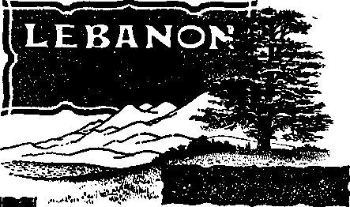
EBANON—the Jamed mountain country where King Solomon got the cedars for his temple. What is it like today? While
only four hundred cedars of the once vast cedar forests remain, Lebanon today is a land of beauty, liberty, tolerance and democracy.
•g Its name comes from the Semitic word labdfi, meaning "to be white," and has reference to the whitish limestone deposits in the mountains. This small republic in southwestern Asia, 120 miles long and only thirty to thirty-five miles wide, perches on the eastern shore of the sparkling blue Mediterranean between Israel and Syria.
'g Though small, Lebanon has an amazingly wide variety of climates. In the wintertime you can enjoy a semitropical climate along the coast and then within an hour’s time be skiing down the cedar-studded slopes of Mount Lebanon. The cool mountains of Lebanon are a constant magnetic attraction to her desert neighbors of Iraq, Egypt, Syria and Saudi Arabia. From desert sheikdoms assemble the kings and princes who only a few years ago exchanged their camels for modern Cadillacs. Rich Moslem men and their harems come from Mecca and Jedda, leaving their scorching sands for a cool summer in Lebanon’s mountains. Oil-rich Arabs from every part of the Middle East rub shoulders in swanky hotels and casinos.
’g The hustle and bustle of the coastal cities of Beirut, Tripoli and Sidon stops as the inhabitants literally flee to the mountains from July to September to escape the sweltering heat and humidity. Shops in the capital city of Beirut open for only half a day as businessmen and shopkeepers drive down ten to twenty-live miles from the main tourist centers Into the city early each morning, then in the early afternoon return to the cooler mountains.
'g In Lebanon, as in most other places in the world, Jehovah’s witnesses are busy preaching. The great influx of tourists aids In the spreading of the message to faraway places. Tourists who obtain literature while in Lebanon take it back to their own countries, and thus the seed of truth is sown in Moslem lands where Christian missionaries are not yet permitted. For instance, one young Moslem subscribed for the Watchtower magazine to be sent for the first time Into the Moslem holy city of Mecca. *g Not only has Beirut’s population greatly increased during recent years, but the automobile import has grown to such great proportions that automobiles seem to outnumber the people. The horn appears to be the most essentia] part of these vehicles. A taxi might be driven without brakes or without other parts’ being in working order, but it would not budge without its horn. The traffic jams would impress visitors from even the world’s largest cities. Some people say the driving is based on the projectile system: the vehicle is aimed rather then steered.
•g Beautiful buildings of modern architecture have sprung up throughout the city. Foreign firms have been attracted, and this land is prospering. Arabic is the basic language; however, in Beirut one is apt to hear more English and French spoken than Arabic. The Lebanese people are friendly and very hospitable.
“g Also highly commendable is Lebanon’s background of religious tolerance and freedom. About half the people are Christian and half Moslem. The “Christians" are divided into various groups, and the Moslems are split into Shiite and Sunnite sects. When, recently, the religious leaders in Syria and Egypt falsely labeled the Christian work of Jehovah's witnesses "Jewish” and greatly hindered the work in those countries, Lebanon refused to bend her knees to religious bigotry and discrimination. This ancient and colorful land where -.East meets West has stood firmly for religious freedom—a fine thing to be able to say about any country!
tfkrgy (Complaint
The chaplain at the British Royal Marine base at Deal, England, recently showed his congregation an I.O.U. for seven cents. Complained the clergyman; “It was part of last Sunday’s collection."
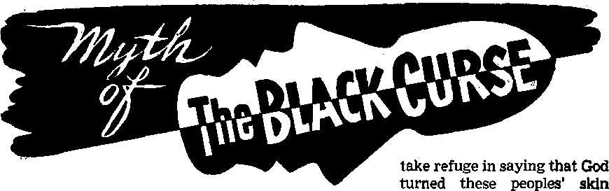
I GREW up in a southern rural community where it was said that black people are black because of a curse God placed on them. I was a white among whites who believed—or said they believed—that black people had been put here, like mules, to serve white people as slaves, in fact, it was said that black people were not really people after all but a part of the animal kingdom.
There was something rather awesome about the whole mystery, because it was said to be a work of God, a thing nobody could change if he wanted to, and so it was just a part of your good moral white religion to keep black people in their place where they belonged.
True, in my boyhood it was no longer crystal-clear just where their place was. There had been a time, here in America, when black men were legal property of white men, like cattle or fence posts, and then everybody knew for a certainty where their place was. But now that was changed. The black folks were still around, they could circulate on their own and buy and sell land, and even vote. Their place was rather out of focus. It was not in your church, on account of this act of God himself. But it was somewhere. Somewhere just outside your world, but nobody knew just precisely where.
If you were a prying brat and pressed some folks far enough they could always black with a curse.
A preposterous myth you say? Well, in America, as late as the time the Constitution was adopted, some church leaders would have called it something outlandish like that. But when their members got rich off of slaves something had to bb changed or the best-paying church members would find themselves a new preacher. As the historian recounts, “the South searched the
Scriptures for Biblical endorsement of the practice.... the South began to insist that slavery was no evil to be tolerated, but the Christian salvation of the Negroes. . , . Constantly the South argued that slavery was sanctioned and in fact commanded by the Bible, and was a divinely-appointed institution especially beneficial to the Negroes. . . . Profoundly convinced that God himself had decreed eternal slavery for the blacks, and construing their warfare to spread slavery throughout the United States as a fight in ‘the holy cause of liberty,’ the South proceeded to battle and die.”—A Complete History of the United States, by Clement Wood, pp. 217, 219, 337, 298.
You do not believe the argument went over? It went over so big that the churches split North and South even before the shooting started. The slavery issue split Methodism wide open in 1844, the Baptists in 1845, and the Presbyterian church divided right down the political Mason-Dixon line. The Methodists healed their schism in 1939, five years short of a century later. Other divisions among America’s leading denominations remain to this day.
The falling apart of American Protestantism over the slavery issue was just another example of the age-old practice of orthodox religion’s being molded by the people to suit themselves instead of religion’s molding the people.
What About Vindicating the Bible?
Now you hear stirflngs, in the wake of recent United States Supreme Court rulings outlawing segregation, that indicate that the white churches would like to wipe out remembrances of this myth of the black curse. Southern churches used the Bible to camouflage their support of Negro slavery a century ago. If the Bible supported their argument that Negroes are God’s chattel gift to whites a hundred years ago, then the Bible still supports that argument, regardless of how the churches now feel, “For I, Jehovah, change not,” the Bible’s Author himself declares at Malachi 3:6, American Standard Version. Therefore what deserves to be vindicated is not the churches, not the Negroes, but the Bible —first of all, not last of all.
Now if somebody had discovered in this Book that God had turned a couple of hundred million people’s skin black by some curse and consigned them to subhumanity as property of other people, surely you or [ or the next fellow could find the tecord of this strange act of God in His own Book.
Come to think of it, did anyone ever cite to you, chapter and verse, the Bible proof of the black curse? What little record there is is very easy to find.
From One Man, Every Nation
What follows is no sermon, no Sundayschool lesson, no catechism. It is the simplest kind of citation of the facts from the Record in question.
Genesis 3:20: “And the man called his wife’s name Eve; because she was the mother of all living.”—Am. Stan, Ver.
Acte 17:26: “And he made out of one man every nation of men, to dwell upon the entire surface of the earth.”—New World Trans.
This latter was Paul’s declaration in Athens, about A.D. 54, indicating no degrading of any races to subhumanity during the 4,000 years since Eve had begun to be “the mother of all living." Paul's conclusion that all races originated from one man and one woman rests on Bible testimony reaching, without contradiction, back to Adam.
Negroids froin Cush—Not Canaan
But what of Noah’s sons? They went through the great flood, and of them the record says: “And the sons of Noah, that went forth from the ark, were Shem, and Ham, and Japheth: and Ham is the father of Canaan. These three were the sons of Noah: and of these was the whole earth overspread.”—Genesis 9:18,19, Am. Stan. Ver.
Now we come to the boundaries of the myth of the black curse. There are three facets to the riddle: (1) Which branch of Noah’s descendants developed the black races? (2) Which branch received the proverbial curse? (3) Were the black branch and the cursed branch the same?
Remember, the myth of the black curse depends upon proof that black races were turned black by a curse from God and also consigned by him to slavery. If there is no proof that he cursed their skin black, that demolishes half the myth. If there is no proof that he consigned them to slavery, that demolishes the other half.
As to the first question, Which was the black branch? Genesis 10:6, 7 furnishes this answer: “And the sons of Ham: Cush, and Mizraim [Egypt], and Put, and Canaan.
And the sons of Cush [Ethiopia]: Seba, and Havilah, and Sabtah,-*nd Raamah, and Sabteca."—Am- Stan. Ver.
Note that Ham’s son Cush fathered Seba, who settled Sudanese territory. But note also that Genesis 10:13 states that Ham’s son Mizraim “became father to Ludim and Anamim and Lehabim and Naphtuhim and Pathrusim and Casluhim (from among whom the Philistines went forth) and Caphtorim.”—New World Trans.
Now the Philistine cousins of the Cushites settled along the eastern Mediterranean coast lines, so that the coastal waters were named the Sea of the Philistines. The Philistines were not Negroid. And the Caphtorim settled the island of Caphtor or Crete. They were not Negroid.
Ham’s third son, Put, is shown on Bible maps as having settled even farther south in Africa than Seba. His descendants were Negroid.
Ham’s fourth son, Canaan, with his families, settled Canaanland, inland from the Philistines, the land that became known as Palestine. (Genesis 10:15-19) Canaan was no Negro. Neither were his descendants.
It is no problem to discover that Ham’s son Cush fathered some Negroid races, while Ham’s son Mizraim fathered some non-Negroid races. That answers the first question—that Negroids developed from among some of the offspring of Cush, but not all of Cush’s offspring were Negroid. But there is no record that Ham’s son Canaan fathered any Negroid races.
Canaan, Not Cush, Received the Curse
The second question,. Which branch of Ham’s children received the curse? is answered at Genesis 9:25: “And he [Noah] said, Cursed be Canaan.”—Am. Stan. Ver.
Canaan and Cush, remember, were brothers, both of them sons of Ham the son of Noah. The curse was to descend upon Ham’s son Canaan. Nothing, however, was said about this curse’s blackening anybody’s skin, or affecting Cush, whose offspring included Negroids.
The curse on Canaan was not a black skin, but slavery. “ ‘Cursed be Canaan. Let him become the lowest slave to his brothers.’ And he added: ‘Blessed be Jehovah, Shem’s God, and let Canaan become a slave to him. Let God grant ample space to Japheth and let him reside in the tents of Shem. Let Canaan become a slave to him also,’ ’’-Genesis 9:25-27, New World Trans.
About nine hundred years later, or by 1,467 B-C., the Shemite Joshua had ended his wars of conquest that settled the Shem-ites or Hebrews in Canaanland. The Canaanites were rank idolaters. They indulged in shameful and abominable vices. They matched other nations in practicing human sacrifice. They were doomed by divine judgment to extermination, not only as a punishment for their wickedness, but also to prevent their seducing Jehovah’s covenant nation of Shemites, the Hebrews. Those that were not executed were placed under bondage. (Joshua 9:23; 1 Kings 9:21) And so Noah’s prophetic curse upon Canaan, Ham’s son, that Canaan would become slave to Shem, Ham’s brother, proved true.
What did all this have to do with the Negroid branch of Ham’s descendants?
Nothing.
That is the Scriptural substance to the myth: nothing. Not a syllable of the Bible record indicates that Negroids were cursed either with blackness of skin or to the lot of slavery. There is no record that the Jews, who were enslaved by the Egyptians, ever enslaved the Cushites or Ethiopians as a race. Moses, the Hebrew leader, thought enough of a Cushite woman to marry her.
tt Is All a Matter of Chromosomes
Thus, skin color has nothing to do with superiority or inferiority, humanity or sub* humanity. Skin color, the scientists and anthropologists agree, is a matter of chromosomes. Byron C, Nelson, in his work After Its Kind, attributes “races” to hereditary factors built right into the original human pair. He says:
“Man, with a set of twenty-four chromosomes, has perhaps J.00,000 genes, each one able to affect in some way the size of the human body, the shape of the skull, the texture of the skin, slant of eye, color of hair, and so on. The genes were placed in the species (“kinds”) by the Creator at creation, together with a definite mechanism or orderly process by which they could at different times reveal their effects. . .. If there are, as is practically certain, multiple factors for color of skin in man, and if Adam and Eve were mulattos—a shade a mixture of black, white, red, and yellow, —it is easy for geneticists to see how their color genes could become grouped ... so as to form the various colors of the races.”
Theodosius Dobzhansky, professor of zoology at Columbia University, expressed further agreement in the January, 1950, Scientific American:
“In the human species there are variations in the skin, hair and eye colors, in the shape and distribution of hair, in the form of the head, nose and lips, in stature, in body proportions, in the chemical composition of the blood, in psychological traits, and so on. Each of these traits is influenced by several or by many genes. To be conservative, let us assume that the human species has only 1,000 genes and that each gene has only two variants. Even on this conservative basis, Mendelian segregation and recombination would be capable of producing 2W0“ different gene combinations in human beings. The number 2’000 is easy to write but is utterly beyond comprehension.”
One Ransom for All
Looking at “race” from another Bible angle, consider that only one ransom was provided for all, proving that all the human family, regardless of race, comes under the same terms, “For if by one man’s offence death reigned by one; much more they which receive abundance of grace and of the gift of righteousness shall reign in life by one, Jesus Christ.”—Romans 5:17.
There is no superrace. Thus Romans 10:12 says: “For there is no distinction between Jew and Greek, for there is the same Lord over all, who is rich to all those calling upon him.” The new world’s blessings will come to all races alike. Thus, 1 Timothy 2:3, 4 tells us that it is God’s will “that all kinds of men should be saved and come to an accurate knowledge of truth.” And Revelation 7:9 says that it is “out of all nations and tribes and peoples and tongues” that the “great crowd, which no man was able to number . . . standing before the throne and before the Lamb” will come, (New World Trans.) Yes, God makes no distinction. All kinds of men, out of all nations and tribes and peoples and tongues, are the same before him, equally acceptable under the ransom that was provided.
The Record Vindicated
When you let the Record speak, unshrouded by religious myths, what is exposed? The cruel hypocrisy of the myth of the black curse. While the myth has lowered one segment of the human family to hateful degradation, its perpetrators have much more to answer for in having degraded the Word of the Creator of all men. They have cast him in the role of archvillain.—Contributed.
By "Awakal" correspondent In Franco
UNLESS you happen to live in western Europe you will probably have trouble fixing in your mind’s eye the exact position of the Saar. Even if your curiosity prompts you to fetch Johnny’s school atlas, the chances are that the Saar will not be marked, and if your bookshelves can boast of a really big atlas it will depend upon the date it was printed as to whether this little territory is shown on the map in the same color as Germany or France. And that last-mentioned fact will do much to explain why the Saar Basin Territory, squeezed between the German Palatinate and French Lorraine, occupies a place in world affairs that is out of all proportion to its size. Believe it or not, the Saar is not a great deal bigger than the area of Greater London!
Its scenery is made up of blatant contrasts: rolling green hills and mountainous slag heaps, delightful wooded valleys and gaunt forests of smokestacks and pithead derricks, spotlessly clean homes and dirty steel mills.
Its German-speaking population of just about one million makes it one of the most densely populated areas of Europe. To illustrate: France and Great Britain have respectively 80 and 200 inhabitants a square kilometer; the Saar has 400 persons living in the same area. This is about twenty times as dense as the population of the United States. The Saarlanders are a busy, hard-working people.
Ever since the early days of the German “Holy Roman Empire” the Saar has shared the fate of most border lands, being thrown back and forth from one sphere of influence to the other. In the Middle Ages its capital Saarbriicken was the seat of the counts of Saarbruck, who, although paying homage to the “Holy” Roman emperor, often helped France militarily. The succeeding dynasty, the counts of Nassau-Saarbruck, also joined France in the Thirty Years’ War against the empire. During the Napoleonic period the Saar was a part of France; and many Saarlanders fought with Napoleon. One of them was the famed Marshal Ney. When Napoleon fell the Treaty of Vienna, signed in 1815, put the Saar within the orbit of Prussia and Bavaria, where it stayed until the end of the first world war, the Saarlanders fighting on Germany’s side during this period.
Thus, from a military standpoint, the Saar has at different periods of its history thrown in its lot with both France and Germany. But religiously it has for long been attached to Germany. It is a predominantly Catholic country and, as far as the internal organization of the Roman
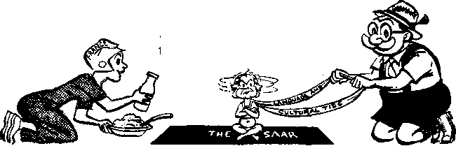
Catholic Church is concerned, it falls within the diocese of the bishop of Trier, Germany. This religious attachment to the Rhineland may do much to explain recent evepts in the Saar.
Economically, the Saar’s history can be summed up by the history of its coal mines. Outcrops of* coal were discovered in this area as early as the fifteenth century. By 1750 the mines, run "by the counts of Nassau-Saarbruck, were producing 4,000 tons of coal a year. Napoleon stepped up production to 100,006 tons a year. After 1815, the Saar mines became known as the Prussian and Bavarian State Mines, and during the following decades annual production attained several million tons.
In 1871, as a result of the German victory in the Franco-German War, Alsace and a part of Lorraine became German. Shortly after this an English metallurgist, Sidney Gilchrist Thomas, succeeded in developing a process for refining and smelting Lorraine iron ore. This opened the way for the creation of an industrial complex based on Lorraine ore and Saar coal. At that time both territories were within the German orbit. Economically, they became interdependent.
The Treaty of Versailles, signed in 1919, brought Alsace and Lorraine back to France, and the Saar was put under League of Nations administration for fifteen years, with the French receiving the Prussian and Bavarian mines as war reparations. In 1935 a plebiscite was held, and 90 percent of the Saarlanders voted in favor of a return to Nazi Germany. When war broke out in 1939, 13 percent of Hitler’s steel came from the Saar, and Saarlanders fought in his armies. The famous Siegfried Line passed right through the Saar, and this section of the Line proved to be one of the toughest nuts the U.S. Seventh Army had to crack in 1945. In fact, the Saar sector held out until it had been outflanked and attacked from the rear, and it was only in March, 1945, that American troops entered Saarbriicken.
The Saar had sided with Hitler, and now it shared his defeat. When Germany was divided up among the various armies of occupation, the Saar was included in the French zone.
Posttoar Schizophrenia
During the years immediately following the war, the Saar developed something of a split personality. Its heart was still with Germany, but its stomach favored France! As part of the defeated Germany it stood to have its heavy industries dismantled as war reparations. As the cold war developed it risked having to share the burden of the hundreds of thousands of refugees that flocked from Eastern to Western Germany, bringing with them the problem of unemployment. With one out of fifteen of its houses destroyed, the Saar needed building materials. It also needed food and clothing. Germany, which was. in the same plight, had nothing to offer, except liabilities resulting from the war.
So when France agreed to renounce a good part of its war reparations from Germany in exchange for the right to incorporate the Saar into its economic sphere, the Saarlanders had no serious objections. In 1947, when asked to vote on a draft constitution providing economic attachment to, France, 95 percent approved.
Thus the Saar not only avoided the penalties of war imposed on Germany, but entered a period of prosperity hitherto unknown. Far from being dismantled, its heavy industries were repaired and expanded by the French and its coal was once again united with the nearby Lorraine iron ore for the producing of steel. While the Germans were still badly fed, clothed and housed, the Saarlanders prospered.'
This schizophrenic “heart with Germany, stomach with France” attitude was still in evidence in 1952, when the people of the Saar were again invited to vote. The pro-German parties were undemocratically excluded from participating in these elections, so they encouraged the people to turn in blank votes. The fact that only 25 percent of them did so is an indication that the majority of the Saarlanders still thought it was in their interest to keep within the economic orbit of France.
But even then it was clear that a trend had started in favor of a return to Germany. From 5 percent in 1947, the proGerman vote had increased to 25 percent, and as Germany staged its economic recovery this trend was likely to increase. The French saw they could not forever hold the Saar, so they gradually granted more political freedom to the Saarlanders and sponsored the idea of a “European” Saar that would be neither French nor German, but autonomous, except in matters of foreign affairs and defense. These would be handled by a neutral commissioner, who would be responsible to the West European Union—an organization that was recently founded to replace the defunct European Defense Community. Economic union with France would continue, but the Saar would have the right to trade also with Germany.
On October 23, 1954,' the French and German prime ministers signed an agreement that gave the Saarlanders the right to vote for or against the “European” status of their land, and permitting all parties to participate in the elections. This referendum was fixed for Sunday, October 23, 1955. By a vote of 423,655 to 201,898, the Saarlanders rejected the statute, and the result was generally regarded as a victorious comeback for the pro-German parties.
The French and German Viewpoints
Commenting on the postwar situation in the Saar, the New York Times of March 6, 1955, reported: “Up to the present the Saar has been a French economic preserve. In justice to the French, this situation is based on solid econonjic reality.” This “economic reality” is based on the following facts. The Saar’s economy relies mainly upon its production of coal and steel. To produce the latter it needs iron ore, and this is to be found in enormous quantities in French Lorraine, which is only a few miles away. If the Saar came within the German economic sphere, it would have to compete with the powerful Ruhr heavy industries, whereas metropolitan and overseas -France provide a ready market for Saar steel and manufactured goods.
The Saar can produce only enough food for fifty days out of the year, and has to import the rest. France, whose economy relies more on agriculture than it does on industry, needs to export foodstuffs and can therefore easily supply the Saar’s needs. On the other hand, Germany cannot produce enough food for its own needs, and has to import forty percent of its foodstuffs.
The French do not want the Saar to become a part of France, but they wish to avoid its becoming a part of Germany, particularly in the economic field. The coal and steel production of France, combined with that of the Saar, counterbalances to some extent the production of Western Germany within the framework of the European Coal and Steel Community, whereas the contrary would mean that Germany would dominate the community.
This reasoning, of course, is based on the traditional French fear of a powerful Germany. The French fear that if the Saar becomes German, then soon Germany will require Lorraine too, since these two territories are complementary in the economic field. These fears are fed by some tactless speeches by influential Germans who talk about the “lost German territories” of Alsace and Lorraine.
Finally, having renounced a good part of their share of reparations for the wealth Germany looted during the war in return for economic priority in the Saar, the French feel they have some moral and legal right to integrate it into their economy. After the recent referendum the influential Le Monde published: “This failure should not lead us to renounce our economic advantages in the Saar, which are founded on strict legal rights. It should not be forgotten that the economic union between France and the Saar was created in exchange for renouncing any other reparations from Germany.”—October 25, 1955.
To all of these arguments the Germans reply very simply that the Saar population is and always will be German. Their language, their culture, their dress and their eating habits are essentially German, they say, so why try to argue away an ethnological fact with economics? The Saarlanders feel the blood call of the fatherland. And politically many Germans fear that cession of the Saar might set a precedent for signing away former German territories now occupied by the Russians.
What Do the Saarlanders Want?
If this article has spoken very little of the desires of the Saarlanders themselves, it is because, in spite of all the much-publicized elections, the solution to the Saar problem does not lie with its inhabitants. Whatever they want or decide, there will be no solution unless both France and Germany come to some agreement.
The Saarlanders are themselves divided in opinion. Strange to say, very few of them seem to want complete independence for their country, like neighboring Luxembourg. They realize the economic advantages of being related to France, but they are also proud of their cultural relations with Germany. Some observers accuse the Saarlanders of being opportunists and wanting the best of both sides.
There may be some truth in this, but who can blame them? Squeezed as it is between two powers that are suspicious of each other’s intentions, Europe’s problem child can only hope to adopt an attitude that will give it the greatest possible security and well-being.
The Saarlanders had an opportunity to express their political attitude when they went to the polls in December, 1955, to elect a new parliament. The results? For the third time in this century their votes were proof that Germany was in their hearts. The ballots gave nearly a two-thirds majority to the three pro-German parties. Had the pro-German parties won 75 percent, they could have erased the constitutional restriction on union with West Germany. Though some observers interpret the election as a decisive step toward the return of that border territory to German sovereignty, others feel that the full meaning of it cannot be seen as yet.
In such a problematical situation, doubtless the happiest Saarlanders are the several hundred Jehovah’s witnesses, who know that the only hope for real security and well-being lies in God’s new world, now near.
C Museum officials who cut open an alligator that died at Brookfield Zoo, Chicago, made quite a haul. They found five marbles, two peach stones, a bicycle reflector lens, two flash bulb bases, a piece of a comb, a dime-store broocht a bent iron rod, eleven pieces of broken bottle, an air valve cap and many stones. The officials made no comment on what caused the alligators death.
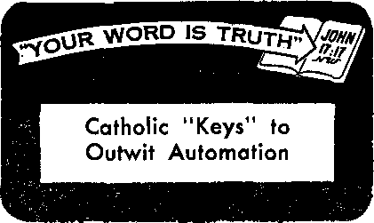
call the day Sunday; that Tertullian, who lived in the third century (A.D. 202), is the first writer who expressly mentions the Sunday rest; and that it was not until the fourth century that positive legislation, both ecclesiastical and civil, clarified the duties of the Sunday observance.
Perhaps the Catholic editor threw a boomerang with his wild assertion. Perhaps he too may be headline hunting?
ZVAE Sunday Visitor, the national Cath-V/olic Action weekly, for October 9,1955, under the subheading “Sabbath Observance on Thursdays?” asserted that Irving R. Murray, a Pittsburgh, Pennsylvania, Protestant preacher was “headline hunting” when he declared that ‘by 1970—if automation increases and the three-day week7 end materializes—the nation’s churches may have to switch their major services from Sunday mornings to Thursday evenings.’ The editor, however, assured Catholic readers that automation would not bother Catholics in the least.
Here is why, he said: “Using the power of the keys conferred on him as supreme head of the Church, Pope St. Peter switched our Sabbath observance from Saturday to Sunday; and using the same power of the keys, Pope Pius XU, if it suited him, could make another switch from Sunday to Thursday, He has already given us evening Masses.”
It might be of special interest to Catholics, however, to note that Peter did not switch the Sabbath observance from Saturday to Sunday, and that the “keys” were never used for that purpose. The Catholic Encyclopedia, Volume XIV, pages 335,336, under the heading “Sunday,” makes no mention of Peter’s switching sabbath days or using the keys entrusted to him for that purpose. In fact, the encyclopedia states that Justin, who lived sometime after A.D. 100, is the first Christian writer to
The Sabbath Switch
Authentic history specifically shows that it was Constantine who insisted on Sunday. He first commanded, A.D. 321, that all Christians should observe the pagan Sunday as the sabbath. The decree read: “Let all judges and townspeople and all occupations of trade rest on the venerable day of the Sun; nevertheless, let those who are situated in the rural districts freely and with full liberty attend to the cultivation of the fields. . . In a second decree Constantine closed courts of law on Sundays, except for the freeing of slaves, “as it should seem most improper that the day of the Sun, noted for its veneration, be occupied in wrangling discussions and obnoxious contentions of the parties.” Take particular note that there is nothing in either of these decrees that makes the old pagan Sunday anything more than what it always was, a day set aside for pagan sun worship, or indirect devil worship.—Deuteronomy 4:19; 2 Kings 23:5; Ezekiel 8: 15-17.
As Philip Schaff says in his History of the Christian Church: “The Sunday law of Constantine must not be overrated. He enjoined the observance, or rather forbade the public desecration of Sunday, not under the name of Sabbatum or dies Domini, but under its old astrological and heathen title, dies Solis [Sunday], familiar to all his subjects, so that the law was as applicable to the worshipers of Hercules, Apollo, and Mithras, as to the Christians.” Another church historian, A. P. Stanley, is quoted (History of the Eastern Church): “The retention of the old pagan name of ‘dies Solis’ or ‘Sunday’, for the weekly Christian festival is in great measure owing to the union of pagan and [so-called] Christian sentiment with which the first day of the week was recommended by Constantine to his subjects, pagan and Christian alike, as the ‘venerable day of the Sun*.”
, *
Use of the Keys
So by Constantine, and not by Peter, was the pagan Sunday sprinkled with the unholy waters of apostasy and renamed the Christian sabbath day. Long before Peter had died he had made use of the keys that were entrusted to him. In the Holy Scriptures the word “key” is used symbolically to represent the privilege of receiving an understanding of hidden truths and unlocking them to others. To the religious leaders of his day, Jesus said: “Woe to you who Eire versed in the Law, because you took away the key of knowledge.” Upon them rested the privilege and duty of explaining God’s law to the people, which they failed to do. They were unfaithful to God and fell into ignorance themselves concerning his kingdom. Worse, they took away from the people the opportunity to understand God’s purposes. Therefore, the privilege and favor that they might have enjoyed Jesus conferred upon Peter, giving him the keys of the kingdom of heaven. This meant that in due time Peter should be given understanding of the kingdom of heaven and be privileged to unlock this sacred secret or to explain it to others.—Luke 11:52, New World Trans.
The first key that Peter was commissioned to use was applied on the day of Pentecost, A.D. 33, when he revealed to an assembled crowd that God’s purpose was to take out from the Jewish nation the first members of the kingdom of heaven class or oody.and the second key he applied A.D. 36, when he disclosed that God’s purpose embraced the non-Jewish nations or Gentiles, that from that year forward Gentiles also could become a part of the “kingdom of heaven” class. There can be no such thing as a successor to Peter in the use of the Kingdom keys, because Peter made complete use of them and finished the use of them by unlocking God’s purposes and making them known first to the Jews and then to the Gentiles.—Acts 15:1-18;10:34,35.
But surely a religious sect like the Catholic Church that has switched the birth date of Jesus from the month of October to that of December, that has, through a pagan emperor, Constantine, imposed Sunday observance upon* Roman Empire Christians, that has managed to give an ever-living Eternal God a mother, and confused its worshipers into believing that Jesus is three persons in one, being his own father and spirit, in heaven and on earth, dead and alive, all at one and the same time, should experience no difficulty in so small a matter Eis switching Sunday observance to any other day.
Catholic (not Peter’s) “keys” may outwit automation, but there is one day they will not switch, namely, the great day of God Almighty at the battle of Armageddon. Of that day the prophet writes: “The slain of Jehovah shall be at that day from one end of the earth even unto the other end of the earth: they shall not be lamented, neither gathered, nor buried; they shall be dung upon the face of the ground. Wail, ye shepherds, and cry; and wallow in ashes, ye principal of the flock; for the days of your slaughter and of your dispersions are fully come.” Let the fixers of days and seasons figure on ways of surviving that day.-—Jeremiah 25:30-38; Isaiah 55:11 (Am. Stan. Ver.); Galatians 4:10.
Sierra Leone
SIERRA Leone is a small country in west Africa, some 500 miles above the eguator, and is about the size of Scotland. It is under British colonial rule. Originally the Sierra Leone colony was formed to give a homeland to freed slaves. Today a modem system of government is established. The country is attractive, with a mountainous coast line that is covered with green tropical growth and trees. The temperature is very hot with high humidity, so many people enjoy a nap during the day, after eating. There are only two seasons here, rainy and dry. Each lasts about six months.
Freetown, located on the Atlantic coast, is the largest and most important city in the country. It is there that Jehovah’s witnesses have a branch missionary home. The circuit servant or minister of Jehovah’s witnesses leaves Freetown by railroad to visit all isolated witnesses and all congregations, to help them with their preaching work by personally demonstrating the most effective methods of preaching the good news of Christ’s established kingdom. His trip usually takes two months or more. Suppose we travel with him on this trip and listen to his comments.
At the Freetown railway station a large crowd is always on hand to take a trip aboard the train into the interior. The people all crowd together in happy groups. Everyone takes his own food and drink with him. At stations along the way the local people bring baskets of fruits and mineral water (soda pop); venders sell palm wine and boys beg to act as guides or to carry things.
There are many different languages spoken, but if one can speak patois, which is a form of broken English, he can generally make himself understood. These people are great readers, so it is not difficult to get to talking about Bible subjects. You may speak with someone in a rather subdued conversational tone, but before you are through there will be ten or eleven joining in the conversation. Many ask for Bible literature for private study. Arabic Bible literature is constantly in demand by the Moslems.
Our first stop is Bo, the second-largest city in the nation, some 164 miles from Freetown. The city is quite modern and it has many villages close by, which are under the control of their chiefs. Those who speak only English find it advisable to take some one along who can translate into the native language. Many of these people, however, do speak English. They are especially eager to learn and to listen to Bible talks. Here Syrian traders show friendliness and hospitality and obtain Bible literature in Arabic.
To travel from Bo to villages below, it is necessary to go by lorry or truck. Riding in a front seat is not bad, but if in back, the floor is often the only place available. Operators drive full speed ahead, stop without warning, take on goats, fruits and passengers. We come to a sudden halt in a village that consists of many thatched-roof houses. Women and children carry their water from a stream in buckets on their heads. During the dry season all cooking is done outside, because a single tire could bum down the whole village.
Walking down a narrow footpath one morning we came upon our first village, where a chief summoned his people to hear a Bible talk given by a minister of Jehovah’s witnesses. The whole village turned out and listened attentively. Bible help booklets were left with the educated ones so that they could in turn explain what was said to those who could not read. Arrangements were mSde for a return visit. Leaving the village, we continued down a narrow path, which paths in the rainy season are flooded with water, crossed many small bridges made of poles intertwined with vines and came upon women washing their clothes in the stream. The chief of the nearby village was advised of our arrival. Young boys ran along, shouting that strangers were coming. The villagers welcomed us with jelly-coconut juice, a delicious drink. After listening to oUr purpose, the village chief assembled all his people and provided for an interpreter. Then the circuit minister of Jehovah’s witnesses got up and spoke to the villagers about God’s kingdom.
In still another village after the witness gave a Bible lecture to a mixed group, among whom were many Moslems, the villagers presented him with *a fat chicken and a basket of fruit as a token of their appreciation and good will and their love for what he had said. Many Moslems desired to know the proper position to assume in prayer. After the circuit minister explained that “position” in prayer was not the important thing, rather that the mental and heart attitude and the spirit in which man approached God were what counted, the crowd responded enthusiastically with favor. Even Moslems nodded their approval.
After visiting all the isolated members of the Christian congregations of Jehovah’s witnesses, the circuit minister boarded the train and started back to Freetown. His assignment is fascinating and colorful. It calls for faith, courage and a deep love for Jehovah and his sheep. The people in general are friendly and easy to get along with. And many of these humble creatures are looking forward to becoming members of the New World society and enjoying the blessings of the new world.
• Why the modern family breakdown has reached such proportions? P. 3, J2.
• Who, really, must be the head of the true church? P. 5, U5.
-
• What part members of the true church play, and how their number is restricted? P. 6, 114.
-
• What happened when an Egyptian baker gave short weight or adulterated his product? P. to, Ui.
-
• How much extra money improved bread would cost? P. 11, 114.
-
• Why an astronomical telescope is of value to missionary students? P. 14, 1i2.
-
• What heavenly marvels are particularly interesting? P. 15, 111.
-
• How American churches came to approve slavery? P. 1 7, US.
-
• What apparently sound explanation there is for the world’s different races? P. 20, 111.
-
• Where the Saar is located, how small it is, and why it occupies such a big place in world affairs? P. 21, Hl.
-
• Whether Constantine’s law regarding Sunday really made it Christian? P. 25, H5. -
-
• What it is like to preach to African villages in Sierra Leone? P. 2S, Hi.
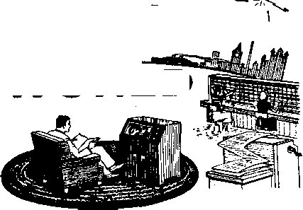
New Middle East Crisis
<$> With whom would the Hashemite Kingdom of Jordan align itself: with the British-American-backed Baghdad alliance of Iraq, Turkey, Iran and Pakistan or with the neutralist group of Syria, Saudi Arabia and Egypt? Basically, that was the problem that threw the Middle East into another crisis in January. Opposing the Baghdad Pact is a large portion of Jordan’s 1,500,000 population; they associate the pact with America, and in Arab eyes America is aligned with Israel. Since nearly 500,000 of Jordan’s population are made up of destitute Arab refugees from the state of Israel, it is understandable why they oppose the American-blessed Baghdad Pact. Further, the Palestinian refugees believe, as they are told by Cairo, that the Baghdad Pact would bring peace with Israel on terms by which they would lose claim to lands or even to compensation. Recently Britain urged Jordan to join the pact. Jordan’s king appointed a government that would accept the Western-backed alliance. Almost immediately a wave of riots broke out in Amman, the mobsters destroying British and American property. Just 72 hours after the new government was formed, Jordan's king dissolved it. But riots continued. For the third time the American consulate in the Jordanian half of Jerusalem was attacked by screaming, stone-throwing mobs. Hauled down and trampled in the streets was the American flag. The king then appointed Samir el-Rifai as premier; he delivered a broadcast virtually rejecting the Baghdad Pact. The mobsters quieted down. It became clear that Jordan would not soon, if at all, join the Baghdad Pact. Moscow, which would like nothing better than to see Jordan turned away from the Western camp into the neutralist Cairo camp, was delighted with the latest crisis.
Rebellion-w racked Algeria
<$> France’s most prized colony is Algeria, technically a part of metropolitan France. It is also France’s greatest colonial hazard. In 11 months Algerian terrorists have killed 457 Frenchmen and 505 pro-French Arabs, wounding close to 1,000. On November 1, 1954, the rebellion began. Some 30 nationalist terrorists fell on French settlements and cut French throats. The nationalist rebellion has not abated. During 1955 the French killed over 2,200 suspected terrorists. The new year seemed to portend greater violence. On one January day 64 persons were killed in clashes with nationalists. Never in 15 months of violence had there been so many killings in one day. And daily the toll of guerrilla incidents increases. Of the Algerian rebellion Time magazine said: “It has long since dwarfed the Mau Mau war in Kenya; it now threatens France with another Indo-China, this time in Europe’s backyard.”
France’s Ungovernable Assembly
<$> When some 21,000,000 Frenchmen voted for a new Assembly in January, they marked an “x” for political instability. An ungovernable Assembly emerged; no single group is strong enough to govern alone. To govern, at least 298 seats are needed. Making up the largest party are the Communists. They won 150 seats. This was a gain of 52 over what the Reds had in the previous Assembly. A bare majority of seats in the new parliament went to four democratic parties of the center. Riddled they are, though, with factional divisions. The left-ofcenter coalition or noncommunist left bloc won at least 160 seats. The right-of-center coalition or conservative bloc won at least 200 seats. The biggest surprise of the election was the success of the Poujadists. Never before in French history has there been an extreme right party like the Poujadists that stands, not for authoritarianism, but against the very authority of the state itself. The Poujadists won 52 seats. They are followers of Pierre Poujade, a leader of a shopkeepers’ movement against taxation. Said Poujade: “My boys are in! . . . We will not hesitate to use the most Draconian methods to achieve what we want—strikes, tax withholding and so on.” The Poujadists and the Reds have thus captured enough assembly seats to make it virtually impossible for other groups to form a stable majority. With the left and right extremists controlling more than one third of the French Assembly, Britain and America were deeply disturbed. But in Moscow there was rejoicing.
India Is Pleased—Russia Also
When Soviet leaders Premier Bulganin and party secretary Khrushchev visited India, they supported New Delhi in its claims to the Kashmir (now divided ' between India and Pakistan) and to Goa, a pocket surrounded by Indian territory. The Red leaders strongly denounced Portugal ftir holding on to Goa; they even questioned Pakistan’s very right to exist. Would the Soviet strong speech boomerang? The West hoped so. Would India be embarrassed? Some Indian officials feared so. But how -India felt depended largely on how Prime Minister Nehru felt. In January Prime Minister Nehru made it clear how he and India felf: that New Delhi had not been embarrassed and that there was no official boomerang in India. Before a public meeting at Agra, the Indian prime minister shattered Western hopes when he said of the Soviet leaders: “They said some veiy good things. I never asked them to do that. But they said the correct things. We are naturally pleased. . . . It is foolish to think that I or any of us did not -like these statements.” Moscow also was naturally pleased.
Surplus Tanks Vex Britain
In. November Prime Minister Anthony Eden said of the Communist supply of tanks to Arab countries: “It is fantastic to pretend that this deliberate act of policy was an innocent commercial transaction.” In January the prime minister may well have wished he had not spoken those words, for he helped furnish Moscow with devastating propaganda. Britain laid the foundation for its present vexation when it disposed of its surplus tanks to private buyers. Some 415 “demilitarized” surplus tanks, according to the Doily Mail, found their way into the hands of European scrap-market operators. In Belgium the tanks were reconditioned and many of them sold to Egypt. This was just what Soviet propagandists were waiting for; they pounced on it as a cat does a mouse and came up charging Britain with blustering hypocrisy. Strong was the feeling in London that it was most unfortunate that Britain had allowed itself to appear implicated In the Middle East arms race. But Moscow was exultant: it had found a weak spot in the Western stand for nonintervention in the Middle East.
Is Spain Breeding Communism ?
<$> A year ago dictator Franco announced plans for eventual restoration of the monarchy. Some elements in Spain’s only legal political body, the Fa-lange, greeted the news rather frostily. Recently a group of Falangist youths broke out in an antimonarchist song, part of which said: “We don’t want to be ruled by an idiotic king of foreign descent." Never before had Franco’s dignity been injured like that! But the dignity of Spain’s regime suffered another setback at Madrid University. A department of the government wanted to find out what the students thought of the rulers. So it gave out 400 questionnaires. The students were amazingly frank. They admitted, for the most part, that they had no confidence in the present regime. Seventy-four percent said that the rulers were incompetent and 85 percent said they were immoral—unscrupulous, false, defrauders. The military leaders fared no better. Some 90 percent said they were incompetent, being not only ignorant hut worthless. Almost 50 percent of the students said the military leaders were also immoral, being women-chasers and drunkards. The Roman Catholic clergy got no compliment either. Seventy percent of the students said that church policy was unacceptable. More than 50 percent accused the clergy of being Ostentatious and ambitious. The political solution to Spain’s problems, 65 percent were convinced, must be a “socialist-type regime." One conclusion drawn from the poll .by Spanish experts was that “the growing discontent and the luck of political experience leaves the field wide open for very probable action” by the Communists. Franco was distressed but Moscow elated.
Red China to Alter Language
The Chinese written Ian-guage has been described as the most difficult to learn. It is made up of some 50,000 ideographs, graphic symbols that represent a thing or an idea, much like Egyptian hieroglyphics. Some ideographs require as many as 29 strokes. Written Chinese being the supreme exercise in memorization, fewer than 20 percent of the people can read or write. The average Chinese who can write knows only about 3,000 ideographs. Even these are difficult to learn, write and remember. As a result 80 percent of a student’s school life is spent in memorizing characters. Peiping has now made known its aim to scrap the complex written language and to replace it with one based on Roman characters. The changeover will take time and will be in two stages. The first stage was announced recently in Peiping. This is the popularization among China's 600,000,000 people of the “mandarin” dialect spoken in Peiping. Though China has only one written language, it has some 220 dialects. Common use of the "mandarin” dialect, says Peiping, “will promote the use of a common spoken language to conform to the pressing needs of the entire people.” When one main dialect has been popularized, it will be easier to advance to the second stage— the spelling out of unified Chinese spoken language fruRo-man phonetic alphabet.
Jubilant Monaco
Monaco is a tiny principality on the Mediterranean Sea near the French-Italian border. Its 22,000 inhabitants enjoy two advantages not common in the world today: they live tax free and are not required to do military service. What makes tax-free living possible is Monaco’s sole industry—pleasure, mostly gambling centered upon Monte Carlo. Sun-drenched though the land is, there was one cloud on the horizon. This was the failure of its 32-year-old ruler, Prince Rainier III, to marry and have’ an heir. Cause there was for worry all right. For should the prince die without an heir, according to a 1918 treaty, Monaco would revert to France. That would mean for the people taxes and military service. Great was the jubilance, then, in January when the people learned that the prince had chosen a princess, 26-year-old Hollywood actress Grace Kelly. By being a Roman Catholic, actress Kelly met a special requirement to be princess of Monaco. The gambling-supported principality is an episcopal see of the Roman Catholic Church.
Missiles Zoom to Top Priority
<& Working at the Redstone Arsenal in Alabama, a group of about 150 former German scientists who made the German V-2 missiles have produced a new guided missile. This is the Redstone; it has a range of almost 200 miles. In January U.S. Army Chief of Staff Taylor announced that the “people” who produced the Redstone would now turn to intermediate ballistics missiles. By this he meant missiles with a range up to 1,500 miles. Said General Taylor: “We are putting everything we have got” into the missile building program. This was understandable, since reports exist that the Soviet Union has already developed a missile with a range of 500 miles.
Mllllon-bollttr Holdup Solved
<$> In January, 1950, the Brink’s armored trucking concern in Boston was robbed of $1,218,211 in cash and $1,557,183 in checks and securities. The robbery touched off one of the most extensive manhunts in history. Police seemed unable to solve the case, even though some of the best men of the Federal Bureau of Investigation went to work on it. Then in January, almost six years after the robbery, J. Edgar Hoover announced that FBI agents had arrested six members of the gang responsible for the holdup. Not a cent of the loot had been recovered. Said the FBI report: “The Brink’s robbery was a product of the combined thought and criminal experience of men who had known each other for many years. The gang spent more than a year in planning the robbery”
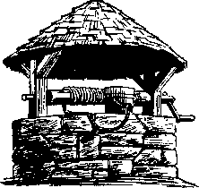
LIFE-GIVING WATERS
WITHIN ARM'S REACHI
That’s what you have in The Watchtower too!
Its message of Jehovah God's kingdom is like sparkling water to a parched throat. Its thirstquenching Bible sermons bring to all kinds of men assurance, hope, comfort and world-wide unity.
Fifty million copies last year and still growing!
Now over two and a quarter million copies each issue, it carries refreshment unequaled for our day in forty-two languages. For your own peace of mind and an increased knowledge of God’s purposes for our times, you need The Watchtower. And it is no farther away than your mailbox when you mail $1 with the coupon below for a year’s subscription. Send at once and you will receive additionally three stimulating booklets on Bible subjects.
WATCHTOWER 117 AbAMS ST. BROOKLYN 1, N.Y.
Please send me semimonthly the Watchtower magazine for one year. I am enclosing $1. This also entitles me to three printed Bible sermons free.
Street and Number
Name ....................................................... or Route and Box ..........................................................................
City................................................................................................... Zone No......... State ........................................................................
How Well Does Your Child Know die Bible?
How Well Do YOU Know It?
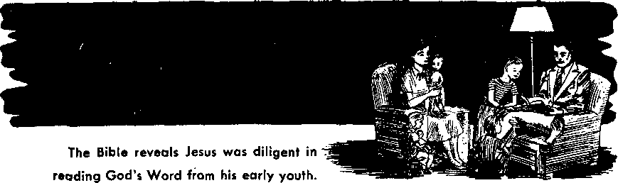
Yet he did not a^end the rabbinical schools of his day. He did his reading at home!
How important that young and old today follow his example! To profit most you need the Bible in the language of our day. You wilt grow to treasure your copies of the New World Translation. Order all three volumes at once.
Volume I contains the Volume II New World Translation of Chris-books from Genesis has 720 pages tian Greek Scriptures, 800 to Ruth. It has and contains the books pages, has Matthew to 864 pages. First Samuel to Esther. Revelation.
The regular edition, hard bound in green leatherette, on Bible paper, is $1.50 each volume. A de luxe edition in flexible green morocco leather binding with gilt-edged Bible paper is only $5 each volume. Mai! the coupon below and read the Bible daily!
WATCHTOWER 117 ADAMS ST. BROOKLYN 1, N.Y.
Please send me the volume(s) of the Neto World Translation cheeked below.
Hebrew Scriptures: □ Vol. I; □ Vol, n; □ Christian Greet Scriptnres.
□ Regular edition (JI.50 each volume: $4.30 for all three). □ De luxe ($5 each volume).
J am enclosing $.................
Street and Number Name.......-........................................................................................... or Route and Box .........................................................................
City................................................................................................... Zone No.........State......................................................................
If you Uva in: CANADA write 40 Irwin Ave., Toronto 5, Ontario. ENGLAND: 34 Cravon Terrace, London, W. Z. AUSTRALIA: II Beresford Rd., Strathflold, N.S.W. SOUTH AFRICA: Private Bag, P.O. Rlandrforrtein, Transvaal.
Trevor-Roper, don at Oxford, confirms the above with these words: “Nevertheless the first war marked a far greater change in history [than the second world war]. It closed a long era of general peace and began a new age of violence in which the second war is simply an episode. Since 1914 the world has had a new character: a character of international anarchy.”—The New York Times Magazine, August 1, 1954, page 9.
The Bremerton Sun, published at Bremerton, Washington, stated on its editorial page for July 30,1954, under the subheading “It All Began 40 Years Ago”: “The first world war, and with it the beginning of most of our present international troubles, broke out 40 years ago [1914] ” And from the opposite side of the United States, the Boston Sunday Globe for April 12, 1953, reports: “Crises make headlines, but continuity is not news. News is a break in continuity, but we can no more live on interruptions to the normal flow of life than we can eat an absence of food. Since 1914 we have had so many crises that our nerves are benumbed, and were these crises as decisive as we are given to suppose, we would by now all have starved or frozen to death. . , . Crisis is a thundersquall, a cyclone, a blizzard, an earthquake, a flood, a fire, a volcanic eruption, a revolution, a war, a pestilence. It may be objected that the foregoing catalogue of crises reads uncommonly like a continuity of our experience since 1914, but had it heen, we would now be extinct.” There were a few days of respite, but none worth mentioning, for all the world since 1914. David Lilienthal, onetime boss of the Atomic Energy Commission, speaking at Western Reserve University, decried "Scaremongering, but conceded that “any person who wants to live a peaceful, quiet, uneventful life has just picked the wrong time to live,”
“Ours is a time when events course by so madly that few stand their ground stubbornly against the sea of troubles,” writes news commentator George E. Sokolsky. “We seem to leap from incident to incident. Suddenly there is a new emergency and men die. Since 1914, great empires have collapsed and nations hardly known then are now world problems.... Our problem is today, as it has been since 1914, to discover a formula for saving our civilization. We have tried war, appeasement, charity, diplomacy, the League of Nations, the United Nations. These efforts have failed. The proof of their failure is that we are still at war. True, the battles for the moment have been localized, but the preparations are for a general war.” “Obviously, something happened between the years 1914 and 1950 which altered the course of Western civilization and of American history and life. That alteration has not been for the better. It has brought us, to date, three general wars and an economic dislocation of great depth. Its social consequences are just beginning to appear in the changed character of our family life." Reminiscing, at another time he recalled an acquaintance’ saying that “the world was fairly comfortable until we all went to war in 1914.” After that it got all mixed up.
Another news correspondent, Edgar Ansel Mowrer, a Pulitzer Prize winner, joins in marking 1914 as a milestone in history. He writes: “But with the carnage of World War I, the subsequent revolutions and famines, the world-wide economic depression, the march of Fascism and Nazism, and the holocaust of World War n, that secure environment [known prior to 1914] receded further and further into a virtually incredible past. Since 1914 there has been no lack'of excitement to complain of. Indeed there has been so much that at times the unending crises, the bloodshed, the tensions have made me reverse my boyhood longings and caused me almost to pine in-
4
AWAKE!